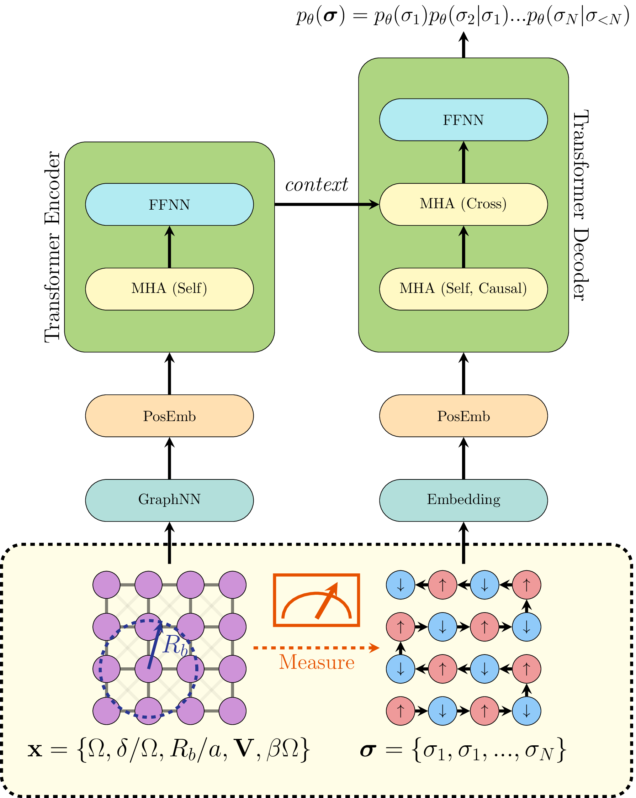

RydbergGPT¶
A large language model (LLM) for Rydberg atom array physics. Manuscript available on arXiv.
Architecture¶
Rydberg System¶
\[
\hat{H}_{\mathrm{Rydberg}} =
\sum_{i < j}^{N} \frac{C_6}{\lVert \mathbf{r}_i - \mathbf{r}_j \rVert} \hat{n}_i \hat{n}_j - \delta \sum_{i}^{N} \hat{n}_i - \frac{\Omega}{2} \sum_{i}^{N} \hat{\sigma}_i^{(x)},
\]
\[
C_6 = \Omega \left( \frac{R_b}{a} \right)^6, \quad V_{ij} = \frac{a^6}{\lVert \mathbf{r}_i - \mathbf{r}_j \rVert^6}
\]
- \(N = L \times L =\) number of atoms/qubits
- \(i, j =\) qubit index
- \(V_{ij} =\) blockade interaction between qubits \(i\) and \(j\)
- \(a =\) Lattice spacing
- \(R_b =\) Rydberg blockade radius
- \(\mathbf{r}_i =\) the position of qubit \(i\)
- \(\hat{n}_i =\) number operator at qubit \(i\)
- \(\delta =\) detuning at qubit \(i\)
- \(\Omega =\) Rabi frequency at qubit \(i\)
- \(\beta =\) Inverse temperature of system
Transformer¶
Vanilla transformer architecture taken from Attention is All You Need.

- \(\mathbf{x} =\) experimental settings
- \(\sigma_i =\) one-hot encoding of measured qubit \(i\)
- \(p_{\theta}(\sigma_i | \sigma_{< i}) =\) neural network conditional probability distribution of qubit \(i\)
The transformer encoder represents the Rydberg Hamiltonian with a sequence.
The transformer decoder represents the corresponding ground state wavefunction.
Acknowledgements¶
We sincerely thank the authors of the following very helpful codebases we used when building this repository :
- Transformer tutorials:
- Transformer quantum state: